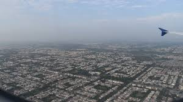
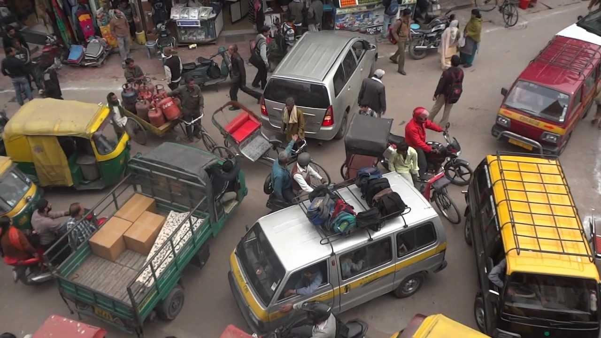

Chandigarh is a city located in North India, very near the lower foothills of the Himalayas. It is situated about 250 km north of New Delhi, the capital, and has a population of around 1.2 million. (This is India, after all!!!). The open hand (picture above) is the emblem of the Government of Chandigarh.
 Chandigarh is a planned city designed by French architect Le Corbusier in 1960 and follows a gridlike urban planning system. It is widely regarded as one of the most organized, cleanest and greenest cities of India. This sometimes can be quite in contrast to the rest of India. >>
This is the Sukhna lake, a man made lake situated in the north of Chandigarh. The most poopular spot in the city, it is always
abuzz with students, grandparents, tourists and more. In the background, you can see the Shivalik hills, the foothills of the Himalayas.
On the right is the Rock Garden. Every sculpture and every landmark in the garden is made out of waste and scrap. Like broken
switches, tubelights, tiles, bottles, ceramic pots etc. A must go if you ever visit Chandigarh.
This is the rose garden. Houses many varieties of roses and other flowers. A boring place to be if you don't enjoy parks, walking
or running. I have only been there five times.